4. 示例应用程序 – 02：rdvmedecins-jsf2-spring
现在，我们将尝试将前一个应用程序移植到 Spring / Tomcat 环境中：
 |
这实际上是一个移植过程。我们将基于前一个应用程序，并将其适配到新环境中。本文仅对修改部分进行说明。这些修改主要分为三类：
- 服务器不再是 Glassfish，而是 Tomcat——一个轻量级服务器，它不包含 EJB 容器，
- 为替代 EJB，我们将采用 Spring——EJB 和 [http://www.springsource.com/] 的主要竞争对手，
- 将采用Hibernate替代EclipseLink作为实现方案。
由于我们将大量在旧项目和新项目之间进行复制/粘贴操作，因此我们会在 NetBeans 中保持之前项目的打开状态：
 |
使用 Spring 框架需要一定的相关知识，这些内容可在 [ref7] 中找到（参见第 166 页）。
4.1. [DAO] 和 [JPA] 层
 |
4.1.1. NetBeans 项目
我们正在构建一个类型为 [Java Application] 的 Maven 项目：
 |  |  |
 |
- 在 [1] 中，即创建的项目，
- 在 [2] 中，该项目去除了 [Source Packages] 和 [Test Packages] 包以及 [junit-3.8.1] 依赖项。
Maven 项目中最困难的部分是找到正确的依赖项。对于这个 Spring / JPA / Hibernate 项目，依赖项如下：
<project xmlns="http://maven.apache.org/POM/4.0.0" xmlns:xsi="http://www.w3.org/2001/XMLSchema-instance"
xsi:schemaLocation="http://maven.apache.org/POM/4.0.0 http://maven.apache.org/xsd/maven-4.0.0.xsd">
<modelVersion>4.0.0</modelVersion>
<groupId>istia.st</groupId>
<artifactId>mv-rdvmedecins-spring-dao-jpa</artifactId>
<version>1.0-SNAPSHOT</version>
<packaging>jar</packaging>
<name>mv-rdvmedecins-spring-dao-jpa</name>
<url>http://maven.apache.org</url>
<properties>
<project.build.sourceEncoding>UTF-8</project.build.sourceEncoding>
</properties>
<dependencies>
<dependency>
<groupId>org.hibernate</groupId>
<artifactId>hibernate-entitymanager</artifactId>
<version>4.1.2</version>
<type>jar</type>
</dependency>
<dependency>
<groupId>org.hibernate.java-persistence</groupId>
<artifactId>jpa-api</artifactId>
<version>2.0.Beta-20090815</version>
<type>jar</type>
</dependency>
<dependency>
<groupId>mysql</groupId>
<artifactId>mysql-connector-java</artifactId>
<version>5.1.6</version>
</dependency>
<dependency>
<groupId>junit</groupId>
<artifactId>junit</artifactId>
<version>4.10</version>
<scope>test</scope>
<type>jar</type>
</dependency>
<dependency>
<groupId>commons-dbcp</groupId>
<artifactId>commons-dbcp</artifactId>
<version>1.2.2</version>
</dependency>
<dependency>
<groupId>commons-pool</groupId>
<artifactId>commons-pool</artifactId>
<version>1.6</version>
</dependency>
<dependency>
<groupId>org.springframework</groupId>
<artifactId>spring-tx</artifactId>
<version>3.1.1.RELEASE</version>
<type>jar</type>
</dependency>
<dependency>
<groupId>org.springframework</groupId>
<artifactId>spring-beans</artifactId>
<version>3.1.1.RELEASE</version>
<type>jar</type>
</dependency>
<dependency>
<groupId>org.springframework</groupId>
<artifactId>spring-context</artifactId>
<version>3.1.1.RELEASE</version>
<type>jar</type>
</dependency>
<dependency>
<groupId>org.springframework</groupId>
<artifactId>spring-orm</artifactId>
<version>3.1.1.RELEASE</version>
<type>jar</type>
</dependency>
</dependencies>
</project>
- 第 18-29 行：用于 Hibernate，
- 第 30-34 行：用于 MySQL 的 JDBC 驱动程序，
- 第 35-41 行：用于测试 JUnit，
- 第 42-51 行：用于 Apache Commons 连接池 DBCP。连接池是一组已打开的连接。当应用程序需要连接时，它会向连接池请求；当不再需要时，则将其归还。 连接在应用程序启动时建立，并在应用程序生命周期内保持打开状态。这避免了反复建立/关闭连接带来的开销。Glassfish 中曾存在此类连接池，但其使用对我们而言是透明的。此处情况亦然，但我们需要自行安装并配置它，
- 第52-75行：针对Spring。
添加这些依赖项并构建项目：
 |
- 在 [1] 中构建项目，这将迫使 Maven 下载依赖项，
- 在 [2] 中，这些依赖项随后会出现在 [Dependencies] 分支中。它们数量众多，因为 Hibernate 和 Spring 框架本身就包含大量依赖项。不过，得益于 Maven，我们无需为此操心。它们会自动下载。
现在我们已获取了依赖项，将 [dao] 层中的 EJB 项目代码粘贴到 [dao] 层的 Spring 项目中：
 |
- 在 [1] 中，复制到源项目，
- 在 [2] 中，将其粘贴到目标项目中，
- 在 [3] 中，显示结果。
复制完成后，需要修正错误。
4.1.2. [exceptions]
 |
类 [RdvMedecinsExceptions] [1] 出现错误，原因是包 [javax] 的第 4 行已不存在。这是 EJB 专属的包。 第6行的错误源于第4行的错误。删除这两行。这将消除[2]的错误。
4.1.3. [jpa] 包
 |
- 在[1]中，由于缺少[5]行的验证包，导致[Creneau]类出现错误。 本可以将该包添加到项目的依赖中。但在测试时，Hibernate 因该包而抛出异常。由于它对我们的应用程序并非必需，因此我们将其移除。要修正该类，只需删除所有错误的 [2] 行。对所有出错的类都进行此操作。
4.1.4. [dao] 包
目前进展到以下步骤：
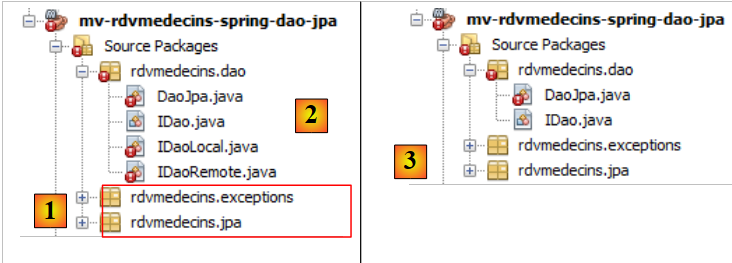 |
- 在 [1] 中，这两个已修正的包，
- 在 [2] 中，即 [dao] 包。 由于不再有 EJB，因此 EJB 中的远程和本地接口概念也不复存在。我们将它们删除 [3]。
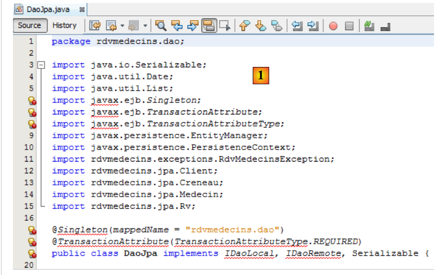 |
- 在 [1] 中，[DaoJpa] 类的错误有两个原因：
- 导入了一个与 EJB 相关的包（第 6-8 行）；
- 使用了我们刚刚删除的本地和远程接口。
我们删除错误的行，并使用接口 [IDao] 代替本地和远程接口 [2]。
 |
在 EJB 项目中，[DaoJpa] 类是一个单例，其方法在事务内执行。 我们将看到，类 [DaoJpa] 将成为一个由 Spring 管理的 Bean。默认情况下，所有 Spring Bean 都是单例。以上是第一个特性。第二个特性是通过 Spring 的 @Transactional 注解在 [3] 中实现的：
 |
完成上述操作后，项目中不再出现错误 [4]。
4.1.5. [JPA] 层的配置
在项目 EJB 中，我们曾通过文件 [persistence.xml] 配置了 [JPA] 层。此处我们有一个 [JPA] 层，因此需要创建该文件。 在项目 EJB 中，我们曾使用 Glassfish 生成该文件。在此，我们将手动构建它。主要原因是 [persistence.xml] 文件中的一部分配置迁移到了 Spring 配置文件本身中。
我们创建文件 [persistence.xml]：
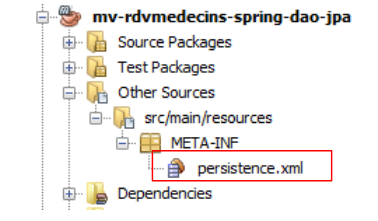 |
内容如下：
<?xml version="1.0" encoding="UTF-8"?>
<persistence version="2.0" xmlns="http://java.sun.com/xml/ns/persistence" xmlns:xsi="http://www.w3.org/2001/XMLSchema-instance" xsi:schemaLocation="http://java.sun.com/xml/ns/persistence http://java.sun.com/xml/ns/persistence/persistence_2_0.xsd">
<persistence-unit name="spring-dao-jpa-hibernate-mysqlPU" transaction-type="RESOURCE_LOCAL">
<class>rdvmedecins.jpa.Client</class>
<class>rdvmedecins.jpa.Creneau</class>
<class>rdvmedecins.jpa.Medecin</class>
<class>rdvmedecins.jpa.Rv</class>
</persistence-unit>
</persistence>
- 第 3 行：为持久化单元命名，
- 第 3 行：事务类型为 RESOURCE_LOCAL。在项目 EJB 中，该值是 JTA，表示事务由容器 EJB 管理。 值 RESOURCE_LOCAL 表示应用程序自行管理事务。此处将通过 Spring 实现，
- 第4-7行：四个实体的完整名称为JPA。此项为可选，因为Hibernate会自动在项目的ClassPath中查找它们。
就这样。JPA 提供程序的名称、其属性以及数据源的特征 JDBC 现已写入 Spring 配置文件。
4.1.6. Spring配置文件
我们提到 [DaoJpa] 类是 Spring 管理的 Bean。这是通过配置文件实现的。该文件还将包含数据库访问配置以及事务管理配置。它应位于项目的 ClassPath 中。 我们将它放在 [Other sources] 分支中：
 |
[spring-config-dao.xml]文件内容如下：
<?xml version="1.0" encoding="UTF-8"?>
<beans xmlns="http://www.springframework.org/schema/beans" xmlns:xsi="http://www.w3.org/2001/XMLSchema-instance"
xmlns:tx="http://www.springframework.org/schema/tx"
xsi:schemaLocation="http://www.springframework.org/schema/beans http://www.springframework.org/schema/beans/spring-beans-2.0.xsd http://www.springframework.org/schema/tx http://www.springframework.org/schema/tx/spring-tx-2.0.xsd">
<!-- 应用层 -->
<bean id="dao" class=" " />
<!-- EntityManagerFactory -->
<bean id="entityManagerFactory" class="org.springframework.orm.jpa.LocalContainerEntityManagerFactoryBean">
<property name="dataSource" ref="dataSource" />
<property name="jpaVendorAdapter">
<bean class="org.springframework.orm.jpa.vendor.HibernateJpaVendorAdapter">
<property name="databasePlatform" value="org.hibernate.dialect.MySQL5InnoDBDialect" />
<!--
<property name="showSql" value="true" />
<property name="generateDdl" value="true" />
-->
</bean>
</property>
</bean>
<!-- 数据源DBCP -->
<bean id="dataSource" class="org.apache.commons.dbcp.BasicDataSource" destroy-method="close">
<property name="driverClassName" value="com.mysql.jdbc.Driver" />
<property name="url" value="jdbc:mysql://localhost:3306/dbrdvmedecins2" />
<property name="username" value="root" />
<property name="password" value="" />
</bean>
<!-- 事务管理器 -->
<tx:annotation-driven transaction-manager="txManager" />
<bean id="txManager" class="org.springframework.orm.jpa.JpaTransactionManager">
<property name="entityManagerFactory" ref="entityManagerFactory" />
</bean>
<!-- 异常处理 -->
<bean class="org.springframework.dao.annotation.PersistenceExceptionTranslationPostProcessor" />
<!-- 持久化 -->
<bean class="org.springframework.orm.jpa.support.PersistenceAnnotationBeanPostProcessor" />
</beans>
这是一个兼容 Spring 2.x 的文件。我们并未尝试使用 3.x 版本的新特性。
- 第 2-4 行：配置文件的根标签 <beans>。我们不对此标签的各项属性进行详细说明。请务必进行复制/粘贴操作，因为这些属性中的任何一个出现错误都可能导致难以理解的错误，
- 第7行："dao" Bean 指向 [rdvmedecins.dao.DaoJpa] 类的实例。将创建一个唯一的实例（单例），并实现应用程序的 [dao] 层，
- 第24-29行：定义了一个数据源。它提供了我们之前提到的“连接池”服务。这里使用的是Apache Commons项目中的[DBCP]（该项目包含DBCP和[http://jakarta.apache.org/commons/dbcp/]），
- 第25-28行：为了与目标数据库建立连接，数据源需要知道所使用的驱动程序（第25行）、数据库的URL（第26行）， 连接用户及其密码（第27-28行），
- 第10-21行：配置JPA层，
- 第 10 行：定义了一个 [EntityManagerFactory] 类型的 Bean，该 Bean 能够创建 [EntityManager] 类型的对象来管理持久化上下文。 实例化的 [LocalContainerEntityManagerFactoryBean] 类由 Spring 提供。它需要若干参数才能实例化，这些参数在第 11-20 行中定义，
- 第 11 行：用于获取 SGBD 连接的数据源。即第 24-29 行定义的 [DBCP] 数据源，
- 第12至20行：要使用的JPA实现，
- 第13行：将Hibernate定义为要使用的JPA实现，
- 第 14 行：Hibernate 需配合目标 SGBD（此处为 MySQL5）使用的 SQL 方言，
- 第 16 行（已注释）：要求将 Hibernate 执行的 SQL 命令记录到控制台，
- 第 17 行（已注释）：要求在应用程序启动时生成数据库（drop 和 create），
- 第 32 行：表明事务通过 Java 注解进行管理（这些注解本也可在 spring-config.xml 中声明）。特别是 [DaoJpa] 类中出现的 @Transactional 注解，
- 第33-35行：定义了要使用的事务管理器，
- 第 33 行：事务管理器是 Spring 提供的类，
- 第 34 行：Spring 的事务处理器需要知道管理 JPA 层的 EntityManagerFactory。该类定义在第 10-21 行，
- 第 41 行：定义了管理 Spring 持久化注解的类，
- 第38行：定义了Spring类，该类主要管理@Repository注解，使带有该注解的类能够将JDBC驱动程序中的原生异常（SGBD）转换为[DataAccessException]类型的Spring泛型异常。 此转换将原生异常 JDBC 封装为类型 [DataAccessException]，该类型包含多个子类：

此转换使客户端程序能够以通用方式处理异常，无论目标 SGBD 为何。我们在 Java 代码中未使用 @Repository 注解，因此第 38 行是多余的。我们保留该行仅供参考。
至此，Spring 配置文件的介绍已全部完成。该配置文件摘自 Spring 文档。将其适配于各种场景通常只需进行两处修改：
- 目标数据库的配置：第24-29行，
- JPA 实现的调整：第 12-20 行。
在代码执行时，配置文件中的所有 Bean 都会被实例化。我们将看到具体实现方式。
4.1.7. 测试类 JUnit
 |
此前我们曾使用测试用例 JUnit 对项目 EJB 的 [DAO] 层进行了测试。对于 Spring 项目的 [DAO] 层，
- 在 [1] 和 [2] 项目中，将测试 JUnit 复制粘贴到这两个项目之间，
- 在 [3] 中，导入的测试在新的环境中出现了错误。
 |
报告的错误[1]是EJB远程接口的错误，而该接口已不存在。 此外，第19行中字段[dao]的初始化代码，原本是针对EJB（第25-28行）的专属调用JNDI。 要实例化第19行的字段[dao]，我们需要利用Spring的配置文件。具体操作如下：
 |
- 第 21 行：接口类型已变为 [IDao]，
- 第28行：实例化[spring-config-dao.xml]文件中声明的所有Bean，特别是以下这个：
<bean id="dao" class="rdvmedecins.dao.DaoJpa" />
- 第29行向第28行的Spring上下文请求一个id="dao"的Bean引用。于是我们获得了一个对Spring已实例化的单例[DaoJpa]（即上文的class）的引用。
第28-29行构建了以下代码块（粉色虚线部分）：
 |
当客户端 JUnit 的测试运行时，[DAO] 层已被实例化。因此可以测试其方法。 需要注意的是，与需要 Glassfish 服务器的 EJB [DAO] 测试不同，此测试无需服务器。在此，所有操作均在同一个 JVM 中执行。
现在可以运行 JUnit 测试了。必须先启动 MySQL 服务器。结果如下：
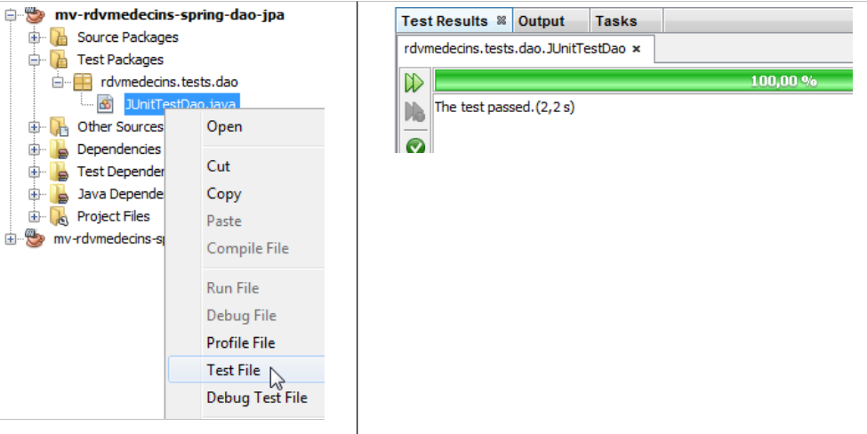 |
测试 JUnit 已成功。让我们像测试 EJB 时那样查看测试日志：
- 第 1-4 行：Spring 日志，
- 第 5-10 行：Hibernate 日志，
- 第 11 行：Spring 报告其实例化的所有 Bean。其中首先出现的是 Bean [dao]，
- 第12行及后续：JUnit测试日志，
- 第60-65行：清晰可见因向数据库中添加已存在的预约而引发的异常。需要指出的是，在EJB中，由于序列化问题，并未出现此异常。
[dao]层已正常运行。我们现在开始构建[métier]层。
4.2. [métier]层
 |
我们采用与 [DAO] 层相同的方法，将 EJB 项目的内容复制并粘贴到 Spring 项目中。
4.2.1. NetBeans 项目
我们构建一个新的 [Java Application] 类型的 Maven 项目，并从 [1] 中移除所有不需要保留的内容：
 |
4.2.2. 项目的依赖项
在架构中：
 |
[métier] 层依赖于 [dao] 层。因此，我们需要添加对前一个项目的依赖：
 |
- 在 [1] 和 [2] 中，我们添加了对 [dao] 层项目的依赖，
- 在 [3] 中，该依赖关系又引入了其他依赖关系，即 [dao] 层项目的依赖关系。
 |
- 在 [1] 和 [2] 中，将项目 EJB 的 Java 源代码复制到 Spring 项目中，
- 在 [3] 中，导入的源代码在新环境中出现了错误。
首先删除 [métier] 层中已不存在的远程和本地接口（[4]）：
 |
- 在 [5] 中，[Metier] 类的错误有多种原因：
- 使用了已不存在的 [javax.ejb] 包；
- 使用了已不存在的接口 [IDaoLocal]；
- 使用了已不存在的接口 [IMetierRemote] 和 [IMetierLocal]。
我们将
- 删除所有与软件包 [javax.ejb] 相关的错误行，
- 将接口 [IDaoLocal] 替换为接口 [IDao]，
- 并将接口 [IMetierRemote] 和 [IMetierLocal] 替换为接口 [IMetier]。
 |
- 在 [6] 中，经此修正的类，
- 为 [7]，错误已消除。
我们已删除对 EJB 的引用，但现在需要找回其属性：
 |
- 第 22 行：原为单例模式。通过将该类设为 Spring 管理的 Bean，即可实现此特性，
- 第23行：每个方法都在事务中执行。这将通过Spring的@Transactional注解实现，
- 第27-28行：对[DAO]层的引用是通过EJB容器的注入获得的。我们将使用Spring注入。
因此，Spring 项目中 [Metier] 类的代码如下所示：
 |
Java 代码部分到此结束。其余内容将在 Spring 配置文件中完成。
4.2.3. Spring配置文件
我们将 [DAO] 层项目中的 Spring 配置文件复制到 [métier] 层项目中。 如果 [métier] 层项目中不存在 [Other Resources] 分支，则先创建该分支：
 |
- 在 [1] 中，于 [Files] 选项卡下，在 [main] 文件夹中创建一个子文件夹，
- 在 [2] 中，其名称应改为 [resources]，
- 在 [3] 中，[Projects] 选项卡下已创建了 [Other Sources] 分支。
我们可以开始复制/粘贴 Spring 配置文件：
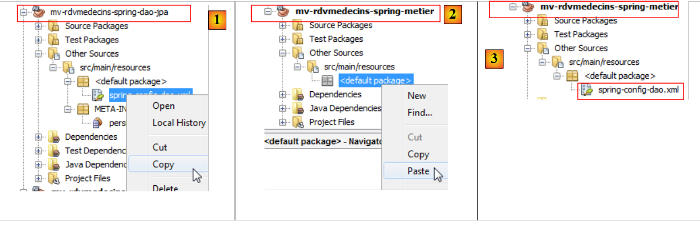 |
- 在 [1] 中，将项目 [DAO] 的文件复制到项目 [métier] [2] 中，
- 即 [3]，该文件即为已复制的文件。
已复制的配置文件用于配置 [DAO] 层。我们为其添加一个 Bean 来配置 [métier] 层：
- 第 2 行：[DAO] 层的 Bean，
- 第 3-5 行：[métier] 层的 Bean，
- 第 3 行：该 Bean 名为 métier（属性 id），是类 [rdvmedecins.metier.service.Metier] 的实例（属性 class）。 该 Bean 将与其他 Bean 一样在应用程序启动时被实例化。
回顾一下 Bean [rdvmedecins.metier.service.Metier] 的代码：
package rdvmedecins.metier.service;
...
public class Metier implements IMetier, Serializable {
// DAO层
private IDao dao;
public Metier() {
}
- 第 8 行：字段 [dao] 将由 Spring 与 Bean métier 同时实例化。让我们回到 Spring 配置文件中该 Bean 的定义：
- 第 4 行：<property> 标签用于初始化已实例化 Bean 的字段。字段名称由 name 属性指定。 因此，将被实例化的将是类 [rdvmedecins.metier.service.Metier] 中的 dao 字段。它将通过一个必须存在的 setDao 方法进行实例化。分配给它的值是 ref 属性的值。此处的值即为第 2 行中 dao Bean 的引用。
简而言之，在代码中：
package rdvmedecins.metier.service;
...
public class Metier implements IMetier, Serializable {
// DAO层
private IDao dao;
public Metier() {
}
第 19 行的 dao 字段将由 Spring 通过 [dao] 层的引用进行初始化。这正是我们想要的效果。dao 字段将由 Spring 通过 setter 进行初始化，我们需要添加该方法：
// 设置器
public void setDao(IDao dao) {
this.dao = dao;
}
我们将 Spring 配置文件重命名为以反映这些更改：
 |
现在我们可以进行测试了。我们将使用之前用于测试 EJB 和 [Metier] 的控制台测试脚本。
4.2.4. [métier] 层的测试
测试将采用以下架构进行：
 |
我们将 EJB 项目的控制台测试复制到 Spring 项目中：
 |
- 在 [1] 和 [2] 项目之间进行复制/粘贴，
- 在 [3] 中，导入的代码出现错误。
 |
导入的代码存在两种类型的错误：
- 第 13 行：接口 [IMetierRemote] 已被接口 [IMetier] 替换，
- 第24-27行：[métier]层的实例化不再通过调用JNDI实现，而是通过实例化Spring配置文件中的Bean来实现。
我们修正了以下两点：
 |
- 第 22 行：调用文件 [spring-config-metier-dao.xml]。该文件中的所有 Bean 均被实例化。其中包括以下这些：
<!-- 应用层 -->
<bean id="dao" class="rdvmedecins.dao.DaoJpa" />
<bean id="metier" class="rdvmedecins.metier.service.Metier">
<property name="dao" ref="dao"/>
</bean>
这两个 Bean 分别代表测试架构中的 [DAO] 和 [métier] 层：
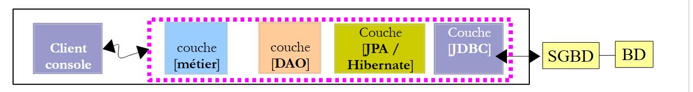 |
完成上述操作后，测试即可开始：
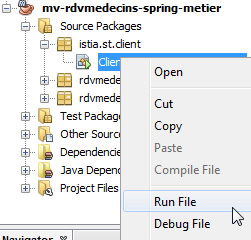 |
测试日志如下：
- 第1-4行：Spring和Hibernate的日志，
- 第5行：Spring实例化的Bean。请注意DAO和业务Bean，
- 第6-53行：测试日志。这些日志与项目EJB的测试结果一致。请参阅该测试的注释（第3.5.3节）。
我们已构建了 [métier] 层。接下来我们将进入最后一层，即 [web] 层。
4.3. [web]层
 |
要构建 [web] 层，我们将采用与前两个层相同的方法，即从项目 EJB 的 [web] 层进行复制/粘贴。
4.3.1. NetBeans 项目
首先，我们构建一个 Web 项目：
 |
- 在 [1] 中，创建一个新项目，
- 在 [2] 中，创建一个类型为 [Web Application] 的 Maven 项目，
- 在 [3] 中，为其命名，
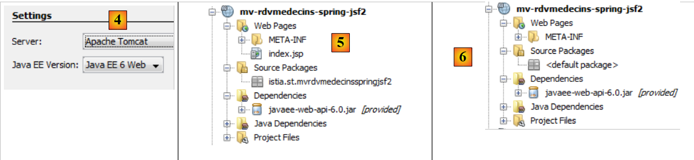 |
- 在 [4] 中，这次选择 Tomcat 服务器，而不是 EJB 项目中使用的 Glassfish，
- 在 [5] 中，生成的项目，
- 在 [6] 中，这是在删除 [index.jsp] 以及 [Source Packages] 的包之后的项目。
4.3.2. 项目的依赖关系
让我们看看项目的架构：
 |
[web]层需要[métier]、[DAO]和[JPA]层。这些层属于我们刚刚构建的两个项目。因此，它依赖于这两个项目：
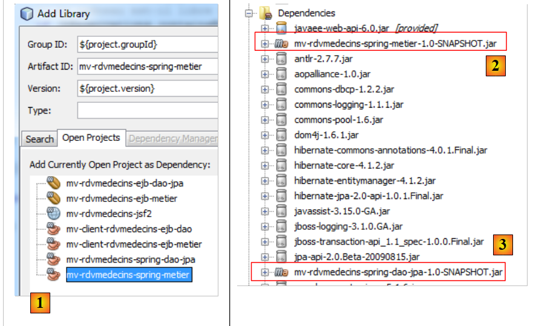 |
- 在 [1] 中，我们添加了对 Spring / 业务项目的依赖，
- 在 [2] 中，已添加 Spring / 业务项目。 由于该项目本身依赖于 Spring / DAO / JPA 项目，因此该依赖项已自动添加到 [3] 的依赖列表中。
让我们回到应用程序的结构：
 |
Web层是JSF层。因此我们需要Java Server Faces库。而Tomcat服务器并不包含这些库。 因此，该依赖项的范围（scope）将不再是 [provided]（如在 Glassfish 服务器中那样），而是 [compile]——这是未指定范围时的默认范围。
我们将这些依赖项直接添加到 [pom.xml] 的代码中：
<dependencies>
<dependency>
<groupId>${project.groupId}</groupId>
<artifactId>mv-rdvmedecins-spring-metier</artifactId>
<version>${project.version}</version>
</dependency>
<dependency>
<groupId>com.sun.faces</groupId>
<artifactId>jsf-api</artifactId>
<version>2.1.7</version>
</dependency>
<dependency>
<groupId>com.sun.faces</groupId>
<artifactId>jsf-impl</artifactId>
<version>2.1.7</version>
</dependency>
<dependency>
<groupId>javax</groupId>
<artifactId>javaee-web-api</artifactId>
<version>6.0</version>
<scope>provided</scope>
</dependency>
</dependencies>
- 第 7-16 行已添加到文件 [pom.xml] 中。这些是针对 JSF 的依赖项，也是 EJB / Glassfish 项目中使用的依赖项。 需要注意的是，这些依赖项没有 <scope> 标签。因此，它们默认的范围是 [compile]。因此，JSF 库将被打包到 Web 项目的 [war] 归档中。
在将这些依赖项添加到 [pom.xml] 文件后，我们编译该项目以便下载这些依赖项。
4.3.3. 将 JSF / Glassfish 项目迁移至 JSF / Tomcat 项目
我们将 JSF / Glassfish 项目的全部代码复制到 JSF / Tomcat 项目中：
 |
- [1, 2, 3]：将旧项目的网页复制到新项目中，
 |
- [1, 2, 3]：将旧项目的Java代码复制到新项目。存在一些错误，这是正常的。我们将予以修正，
 |
- 在 [1] 中，于 NetBeans 的 [Files] 标签页中，在 [main] 文件夹下创建子文件夹 [resources]，
- 这将在[Projects]选项卡中创建分支[Other Sources] [3]，
 |
- [1, 2, 3]：将旧项目中的消息文件复制到新项目中。
4.3.4. 导入项目的修改
我们已指出导入的 Java 代码中存在错误。让我们来查看这些错误：
 |
- 在 [1] 中，仅 [Application] Bean 存在错误，
- 在 [2] 中，错误仅因接口 [IMetierLocal] 已不存在而引发。这里令人惊讶的是，第 20 行并未报错。 注解 @EJB 明确引用了 EJB，且在此处被识别。这是因为存在依赖关系 [javaee-web-api-6.0] [3]。 Java EE 6 引入了一种架构，允许在没有 EJB 远程接口的服务器上，部署基于 EJB 的 Web 应用程序，即使这些服务器没有 EJB 容器。 服务器只需提供 [javaee-web-api-6.0] 依赖项即可。实际上，我们可以看到该依赖项的作用域为 [provided] [3]。
在此我们不会使用依赖项 [javaee-web-api-6.0]。我们将删除 [1]：
 |
 |
这导致了新的错误 [2]。我们将从 [Form] bean 的错误开始处理：
 |
- 在 [1] 中，出错的行与 [javax] 包的缺失有关。 我们将 [2] 中的所有相关行删除。这些错误行将类 [Form] 定义为会话作用域的 Bean（见 [1] 的第 18-20 行）。 此外，bean [Application] 是在第 25 行被注入的。这些信息将迁移到 JSF 和 [faces-config.xml] 的配置文件中。
接下来看 [Application] Bean：
 |
删除 [1] 中所有错误的行，并将第 13 行和第 21 行中的接口 [IMetierLocal] 更改为 [IMetier]。 在 [2] 中，已无错误。在 [1] 中， 我们删除了第15-16行，这些代码原本将类[Application]定义为作用域为application.的Bean。该信息将迁移至JSF和[faces-config.xml]的配置文件中。 我们还删除了第 20 行，该行曾向 Bean 中注入 [métier] 层的引用。现在，该引用将由 Spring 进行初始化。我们已经拥有所需的配置文件，即 Spring / 业务项目中的配置文件。我们将它复制如下：
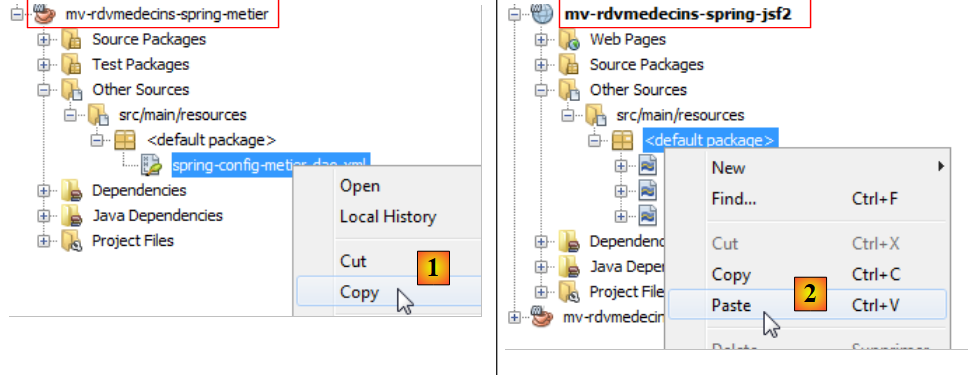 |
- 复制为 [1, 2]，我们将 Spring / 业务 项目中的 Spring 配置文件复制到 Spring / JSF 项目中，
 |
在 [3] 中，即为结果。
在 Bean [Application] 中，需利用该配置文件以获取 [métier] 层的引用。此操作在方法 [init] 中完成：
package beans;
...
import org.springframework.context.ApplicationContext;
import org.springframework.context.support.ClassPathXmlApplicationContext;
public class Application {
// 业务层
private IMetier metier;
...
public Application() {
}
@PostConstruct
public void init() {
try {
// [métier] 层的实例化
ApplicationContext ctx = new ClassPathXmlApplicationContext("spring-config-metier-dao.xml");
metier = (IMetier) ctx.getBean("metier");
// 将医生和客户缓存
...
} catch (Throwable th) {
...
}
...
}
- 第 20 行：实例化 Spring 配置文件中的 Bean，
- 第21行：请求业务Bean的引用，即[métier]层的引用。
通常情况下，Spring Bean 的实例化应在应用范围 Bean 的 init 方法中进行。还有另一种方法，即通过 Spring Servlet 来实例化 Bean。这需要修改文件 [web.xml]，并添加对工件 [spring-web] 的依赖。 出于与先前代码保持一致的考虑，我们在此未采用该方法。
我们已移除了 [Application] 和 [Form] 类中的注解，这些注解原本将它们定义为 JSF Bean。这些类必须保持为 JSF Bean。 因此，我们不再使用注解，而是通过 JSF 和 [WEB-INF / faces.config.xml] 的配置文件来声明 Bean。
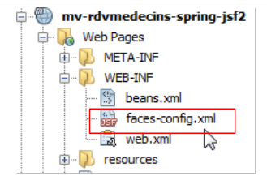 |
该文件现内容如下：
<?xml version='1.0' encoding='UTF-8'?>
<!-- =========== FULL CONFIGURATION FILE ================================== -->
<faces-config version="2.0"
xmlns="http://java.sun.com/xml/ns/javaee"
xmlns:xsi="http://www.w3.org/2001/XMLSchema-instance"
xsi:schemaLocation="http://java.sun.com/xml/ns/javaee http://java.sun.com/xml/ns/javaee/web-facesconfig_2_0.xsd">
<application>
<!-- 消息文件 -->
<resource-bundle>
<base-name>
messages
</base-name>
<var>msg</var>
</resource-bundle>
<message-bundle>messages</message-bundle>
</application>
<!-- Bean applicationBean -->
<managed-bean>
<managed-bean-name>applicationBean</managed-bean-name>
<managed-bean-class>beans.Application</managed-bean-class>
<managed-bean-scope>application</managed-bean-scope>
</managed-bean>
<!-- 表单 Bean -->
<managed-bean>
<managed-bean-name>form</managed-bean-name>
<managed-bean-class>beans.Form</managed-bean-class>
<managed-bean-scope>session</managed-bean-scope>
<managed-property>
<property-name>application</property-name>
<value>#{applicationBean}</value>
</managed-property>
</managed-bean>
</faces-config>
- 第 10-19 行配置了消息文件。这是 JSF / EJB 项目中唯一的配置，
- 第21至35行声明了应用程序JSF的Bean。 这是 JSF 1.x 版本的标准方法。JSF 2 引入了注解，但 JSF 和 1.x 的方法仍然受支持，
- 第 21-25 行：声明 applicationBean Bean，
- 第 22 行：Bean 的名称。可能会有人想使用“application”作为名称，但应避免，因为这是 JSF 中一个预定义 Bean 的名称，
- 第 23 行：Bean 类的完整名称，
- 第 24 行：其作用域，
- 第 27-35 行：定义表单 Bean，
- 第 28 行：Bean 的名称，
- 第 29 行：Bean 类的完整名称，
- 第 30 行：其作用域，
- 第 31-34 行：定义 [beans.Form] 类的属性，
- 第 32 行：属性名称。[beans.Form] 类必须包含一个同名字段及其对应的 setter 方法，
- 第 33 行：字段的值。此处是第 21 行定义的 Bean applicationBean 的引用。 因此，此处将作用域为 application 的 Bean 注入到作用域为 session 的 Bean 中，以便后者能够访问作用域为 application 的数据。
我们前面提到，bean [beans.Form] 的字段 [application] 将通过 setter 进行初始化。因此，如果该字段尚未存在，则需将其添加到类 [beans.Form] 中：
public void setApplication(Application application) {
this.application = application;
}
4.3.5. 应用程序测试
我们的应用程序现已无错误，并已准备好进行测试：
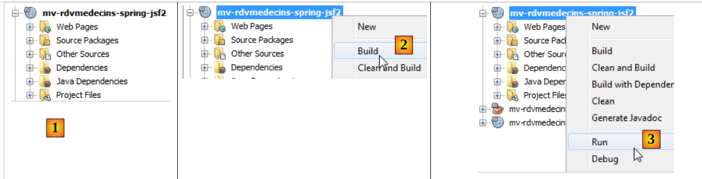 |
- 在 [1] 中，将修正后的项目
- 在 [2] 中进行构建，
- 在 [3] 中，我们运行它。必须启动 SGBD 和 MySQL。 如果 Tomcat 服务器尚未启动，则会启动 [4]，随后应用程序的首页将显示 [5]：
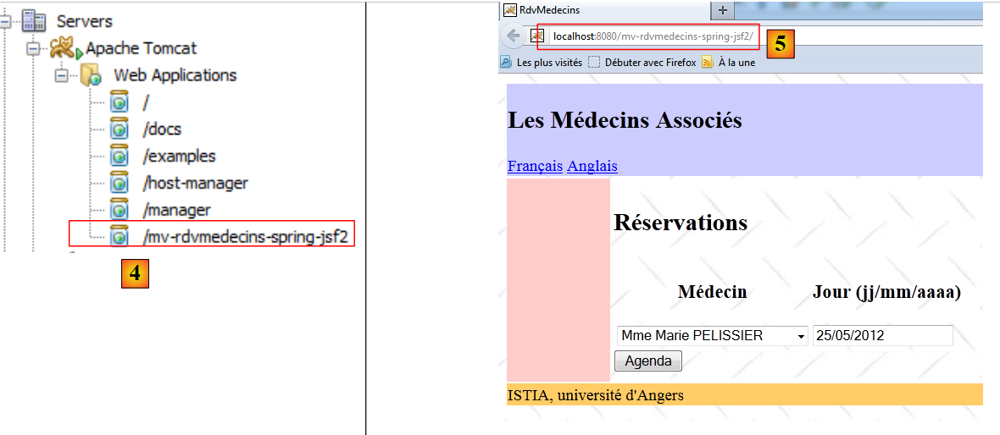 |
至此，我们已进入所研究的应用程序。请读者自行验证其是否正常运行。现在，让我们停止该应用程序：
 |
- 在 [1] 状态下，应用程序被卸载，
- 在[2]中，该应用程序已不复存在。
现在我们来看Tomcat的 日志：
第2行和第4行提示应用程序停止时出现故障。第4行指出可能存在内存泄漏的风险。 实际上，内存泄漏确实发生了，过了一会儿 NetBeans 就无法使用了。这个问题特别令人恼火，因为每次重新运行项目时都必须重新启动 NetBeans。在文档《通过实例了解 Struts 2》[http://tahe.developpez.com/java/struts2] 中已经遇到过这个问题。
网上关于此错误的信息很多。当反复在 Tomcat 上加载/卸载应用程序时，该错误就会出现。过了一段时间后，会出现错误 java.lang.OutOfMemoryError: PermGen 空间。 如果该错误源于第三方归档文件（jar），如本例所示，似乎没有办法避免。此时必须重启 Tomcat 才能消除该错误。
不过，我们可以延缓该错误的出现。首先，增加溢出的内存空间。
 |
- 在 [1] 中，进入 Tomcat 服务器的属性，
- 在[2]中，进入[Platform]选项卡，设置内存溢出的阈值。 此处设置为 1 GB，因为总内存为 8 GB。若内存较小，可设置为 512M（512 MB）。
随后，将 JDBC 驱动程序从 MySQL 移动到 <tomcat>/lib，其中 <tomcat> 是 Tomcat 的安装目录。
 |
- 在 [1] 中，于 Tomcat 的属性中，记录其安装目录 <tomcat>，
- 在 <tomcat>/lib 目录下，将 [2] 驱动程序更新为 JDBC（最新版本），替换原有的 MySQL 和 [3]。
随后，移除项目对驱动程序 JDBC（版本号为 MySQL、[4]）的依赖。
 |
完成上述操作后，对应用程序进行测试。发现可以反复加载/卸载应用程序。然而，内存泄漏问题并未解决，只是推迟到了稍后出现。
4.4. 结论
我们将 JSF / EJB / Glassfish 应用程序迁移到了 JSF / Spring / Tomcat 环境。这主要通过在两个项目之间进行复制粘贴来实现。 之所以能够实现，是因为 Spring 和 EJB3 技术具有高度相似性。事实上，EJB3 的创建，正是源于 Spring 展现出的性能优于 EJB2。 随后，EJB3 便借鉴了 Spring 的优秀设计理念。
4.5. 使用Eclipse进行的测试
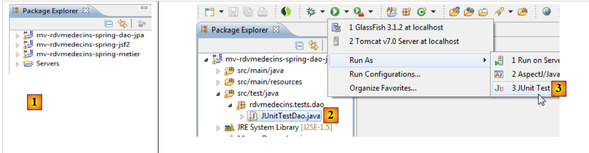 |
- 在 [1] 中，导入三个 Spring 项目，
- 在 [2] 中，选择 [DAO] 层中的 JUnit 测试并执行，
 |
 |
- 在 [4] 中，测试成功，
- 在 [5] 中，控制台日志。
 |
- 在 [6A] [6B] 中，执行 [métier] 层的控制台客户端，
- 在 [7] 中，显示的控制台界面，
 |
- 在 [8] [9] 中，在 Tomcat 7 服务器上运行 Web 项目 [10]，
 |
- 在 [11] 中，应用程序的首页将在 Eclipse 的内置浏览器中显示。